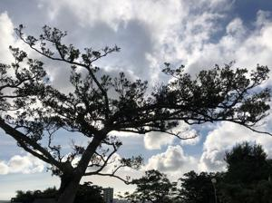
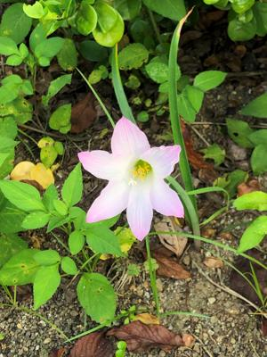
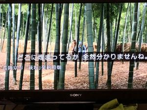

うるがいの話 ある日
最新: 夏至【うるがいの話 ある日】とは 一日だけのプログです
『うるがいの話』の最新一日だけのプログで、通信料が少なく経済的だ。カニの画像をクリックすると全ての日付が載る『うるがいの話』サイトを表示します
|
|
【うるがいの話】 うるがい(ｳﾙｶﾞｲ urugai)とは、『もずくがに』の名前でとても大きくなります。 |
|---|---|
|
|
【カミマヤーの話】 猫のことを方言でマヤーといいます。カミマヤー（kamimayaa）とは、神の猫のことです。 |
|
【たながぁの音楽】 たながぁ（ﾀﾅｶﾞｰ tanagaa）とは手長えびのことで、何種類かあり大きいのは車 エビぐらいになります。 |

|
【ぶながぁの話】 ぶながぁ(ﾌﾞﾅｶﾞｰ bunagaa)とは、赤い髪の毛、赤い身体、そして身長は１ｍ２０ｃｍ ぐらい、川の蟹を食べているの目撃された。場所は沖縄県国頭郡大宜味村のと ある村僕の隣近所に住んでいる爺さんから、聞いた話です。 |
|
|
【ギーマの話】 ギーマ(giima)とは、山原の里山に咲くスズランに似た、 花を付けます。実は食べられます、 気が付くと口の周りが紫になっています。 |
2022年06月21日 (火）夏至
16:21
 
今日は夏至である、５時前に起きると空には既に明るくなり始めている今日こ
の頃である。４時起きが日常の私にとっては、今がいいのだが・・。シロアリ
の床下点検を、業者の人が行うのに立ち会う。仏壇の部屋の畳の一つを開けそ
こから床下に入っていくのだが、入る時はまだしも出る時は、苦しそうにして
５分程かかる。 毎年 ながら大変な仕事だと思う。小さい頃、実家の縁側から
床下に入り込み、落ちていた１セントや５セントを拾った記憶が ある。

コドモと似ている俳優がいるドラマドラマ「京都人の密かな愉しみBlue修業中
門出の桜」を見る。番組で、タケノコ料理がでるがその竹は、私が住んでいた
長岡京市の寮の近くにあった。竹がある一帯を散策したところタケノコが、売
りに出されていた。番組では有名だとのこと、いやー、初めて知った。
１６時１５分 ビットコインの総資産 ￥８、２６１↑